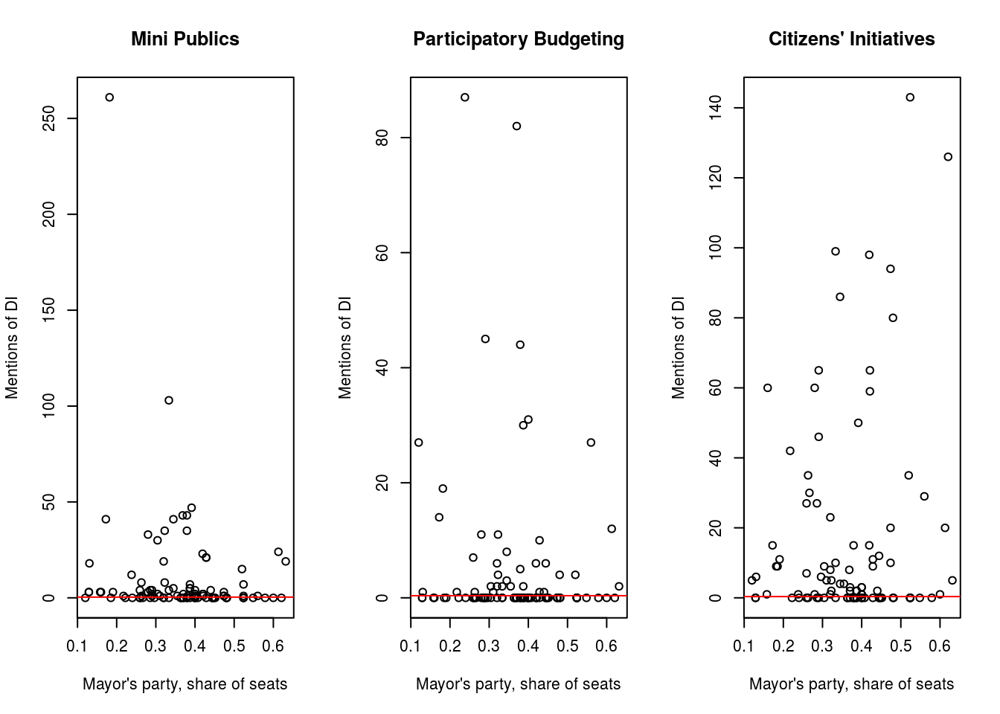

Sharing Power with Citizens? Political Party’s Support for Democratic Innovations in Danish Local Councils
CES International Conference of Europeanists, Reykjavik, 27. June 2023
Nikolai Gad
Technical University of Munich, Hochschule für Politik München
Introduction
Research Question:
Are decisions by political decision makers to adopt democratic innovations in local councils driven by strategic or ideological concerns?
EXpectations / hypotheses:
- Ideology of mayor does not matter:
- The adoption of democratic innovations is similar across local councils regardless of whether they are ruled by a social democratic, liberal, or conservative mayor.
- Strategic concerns of mayor matters:
- Mayors with large majorities have no incentive to support democratic innovations.
Democratic Innovations in Danish Local Councils
- "Borgerforslag": Ligth agenda-setting citizens's initiatives (CI's) with no referendums.
- "Borgersamlinger" & "Borgerting": Mini-publics with randomly sampled citizens, rarely institutionalised.
- "Borgerbudgetter": Participatory Budgeting (PB), usually with very limited funds allocated and rarely institutionalised.
Based on examples and services listed on local council websites and professional citizen engagement agencies.
Methods
Mapping DI's in local councils: Automatic scraping of search engines
- One out of many ideas to use web scraping.
- Send a lot of search requests and automatically scrape results.
- Obtain a list of every page on website where certain keywords occur.
- Relevant keywords about DI's.
- Needs further validation, but seems to work surprisingly well.
- Current analysis is based on Bing search results, but Google and DuckDuckGo was also tested.
Preliminary results
Prevelance of democratic innovations on local council websites
| Pages mentioning CI |
16.765306 |
29.65882 |
0 |
3 |
143 |
98 |
100 |
| Pages mentioning MP |
10.193878 |
29.80232 |
0 |
1 |
261 |
98 |
100 |
| Pages mentioning PB |
5.316326 |
14.42335 |
0 |
0 |
87 |
98 |
100 |
DI's and ideology
| A |
44 |
44.90 |
44.90 |
| V |
34 |
34.69 |
79.59 |
| C |
14 |
14.29 |
93.88 |
| SF |
2 |
2.04 |
95.92 |
| B |
1 |
1.02 |
96.94 |
| I |
1 |
1.02 |
97.96 |
| otherParties |
1 |
1.02 |
98.98 |
| SlesvigskParti |
1 |
1.02 |
100.00 |
| Total |
98 |
100.00 |
100.00 |
MP: r=-0,17 (p=0,09); PB: r=-0,11 (p=0,3); CI: r=-0,17 (p=0,18)

|
| Dependent variable: |
| |
| MP.mentions |
| (1) | (2) | (3) | (4) | (5) |
|
| Party: B | -6.620 | 3.268 | 6.159 | 7.614 | 9.122 |
| Party: C | -1.156 | -1.297 | -3.673 | -4.225 | -4.334 |
| Party: I | -7.824 | -7.164 | -9.933 | -10.118 | -9.893 |
| Party: otherParties | -6.584 | -8.464 | -8.949 | -8.247 | -7.507 |
| Party: SF | -7.485 | -11.539 | -12.675 | -12.643 | -12.285 |
| Party: SlesvigskParti | 7.817 | 5.091 | -3.009 | -5.989 | -6.178 |
| Party: V | 1.988 | 4.370 | -0.044 | -0.892 | -0.952 |
| MayorPerc | -21.187 | -33.213* | -27.591* | -27.792* | -28.172* |
| Population2023 | 0.0003*** | 0.0003*** | 0.0004*** | 0.0004*** | 0.0004*** |
| `Kvadratmeter (m2) pr. indbygger` | 0.0003 | 0.00003 | -0.00005 | | |
| `Kvadratkilometer (km2)` | -0.023*** | -0.016** | -0.004 | | |
| AvrAge | 0.430 | -0.270 | 0.337 | 0.364 | |
| IncomeTaxPrPer | 0.301 | 0.632* | 0.383 | 0.424 | 0.488* |
| ExpensesPrPer | | 0.821** | 0.615 | 0.643* | 0.712** |
| CouncilTypeLandkommuner | | | -10.179 | -12.863 | -10.794* |
| CouncilTypeOplandskommuner | | | -5.775 | -7.066 | -5.417 |
| CouncilTypeProvinsbykommuner | | | -21.602*** | -23.545*** | -22.329*** |
| CouncilTypeStorbykommuner | | | -63.371*** | -65.002*** | -64.199*** |
| Constant | -27.991 | -69.953 | -67.684 | -72.966* | -65.952** |
|
| Observations | 98 | 98 | 98 | 98 | 98 |
| R2 | 0.653 | 0.672 | 0.772 | 0.771 | 0.770 |
| Adjusted R2 | 0.599 | 0.617 | 0.720 | 0.725 | 0.728 |
| Residual Std. Error | 18.862 (df = 84) | 18.439 (df = 83) | 15.783 (df = 79) | 15.619 (df = 81) | 15.533 (df = 82) |
| F Statistic | 12.166*** (df = 13; 84) | 12.172*** (df = 14; 83) | 14.824*** (df = 18; 79) | 17.009*** (df = 16; 81) | 18.337*** (df = 15; 82) |
|
| Note: | *p<0.1; **p<0.05; ***p<0.01 |
(Preliminary) Conclusion and next steps
- DI has no direct relationship with ideological or strategical concerns of mayors.
- Size of mayor's party has a weak, but significant (p<0,10) correlation with mentions of mini publics.
- This effect persists when controlling for relvant council level variables.
- One percentage point increase of seats in local council to mayor's party, is associated with approx. 30 more mentions of mini publics on local council website.
- So ideology of mayors (at least when dsitinguishing between mainstream ideologies) does not seem to have any efffect.
- Strategic concerns, on the other hand, tends to have an effect on the use of mini publics, but not other DI's.
Next steps:
- Validate search scrape results (as a proxy variable for implementing DI's).
- Rescaling meassures of mentions to make them comparable across cases.
- Other relevant control variables (gender of mayor/council, distinction between council expenses).
- Consider other DV's than mayor, fx. the strength of different fringe ideologies in local councils.
- Study context in which keywords occur on websites.